7. Approximating SSE operators¶
The goal ahead is to approximate and provide computable representations of:
- each candidate correspondence 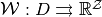; and
- the operator 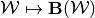.
7.1. Conceptual¶
Recall  denotes a partition of
denotes a partition of  , so
, so
 . An upper hemicontinuous, compact- and
convex-valued correspondence
. An upper hemicontinuous, compact- and
convex-valued correspondence  can be approximated by step-valued correspondences using the following procedures: Letting
can be approximated by step-valued correspondences using the following procedures: Letting

the correspondence defined by 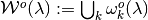 gives an outer step-valued approximation
of  .
.
Similarly, letting

the correspondence defined by 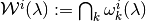 yields an inner step-valued approximation
of .
7.2. Practical¶
Since the convex-valued approximations
 and
and  are constant on each partition
element
are constant on each partition
element  , and there are
, and there are  partition elements, these
approximations can be further approximated by constructing outer and inner
approximations for the sets 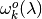 and
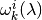 using convex polytopes.
Let
partition elements, these
approximations can be further approximated by constructing outer and inner
approximations for the sets 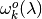 and
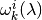 using convex polytopes.
Let  be the unit
be the unit  -sphere where the norm
-sphere where the norm  is given by
is given by  . Suppose we have finite sets of directional vectors:
. Suppose we have finite sets of directional vectors:  and 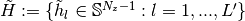.
Let
and 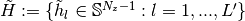.
Let
 and
and  denote the corresponding polytope approximations, respectively, of and
, where
denote the corresponding polytope approximations, respectively, of and
, where

and,

Let 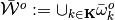
and  denote the resulting correspondences. One would like the “true” correspondence to be “sandwiched” by polytope “step-correspondences”
denote the resulting correspondences. One would like the “true” correspondence to be “sandwiched” by polytope “step-correspondences”  from the outside, and, by 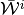 from the inside. [2]
from the outside, and, by 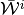 from the inside. [2]
(1)
The last statement (1) is only true if the step-correspondence levels  and 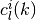 are defined, respectively, as the maximal and minimal levels over each domain partition element , in each direction
and 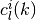 are defined, respectively, as the maximal and minimal levels over each domain partition element , in each direction  or 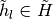. [1]
or 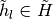. [1]
In the next section, we show how to construct these upper- and lower
bounding estimates and by using
stochastic global optimization programs and also separable bilinear program
formulations, when represents a candidate guess of the
symmetric sequential equilibrium payoff correspondence in our class of
games.
Footnotes
| [1] | In the context of our game, where stands for a candidate guess of the equilibrium value correspondence, the last statement (1) is only true if the step-correspondence levels and are defined, respectively, as the globally maximal and minimal values of each nonlinear programming problem (which is defined over each state-space partition element , in each direction or ) that summarizes the concept of symmetric sequential equilibrium of the game. |
| [2] | This idea of providing both upper- and lower-bounding estimates of a given correspondence was first proposed by [JYC2003] in the computation of repeated games. Our proposed method is a modification of [SY2000] who in turn extended [JYC2003] to the computation of value correspondences in dynamic games. Our contribution will be in the form of bilinear programming formulations as a practical and computable means of constructing these approximate correspondences. |